MATSim - GUI
Introduction
MATSim (https://matsim.org/) is an open-source framework for implementing large-scale agent-based transport simulations. In this tutorial we will learn how to import the output of a successful MATSim simulation into NoiseModelling. The idea is to use the traffic data from MATSim for NoiseModelling road noise emission. Then we will leverage the fact that MATSim is a multi-agent simulator. We will import MATSim agent’s positions to calculate their noise exposition throughout the simulated day.
For this tutorial, we’ll look into a simulation of a small part of the center of Nantes, the 6th most populated city in France.
Prerequisites
You need to have a working installation of the latest NoiseModelling version
A basic knowledge of what the MATSim traffic simulator does and how it works is preferable
(optional) A working installation of DBeaver (https://dbeaver.io/) can be useful to visualize the NoiseModelling database tables
(optional) A working installation of Simunto Via (https://www.simunto.com/via/) can be useful for visualizing the MATSim scenario
(optional) A working installation of QGis (https://www.qgis.org/) can be useful to visualize resulting GIS data
The data
You can download and unzip the data in any folder from here: https://github.com/Universite-Gustave-Eiffel/NoiseModelling/releases/download/v5.X-Matsim-Test-Scenario/scenario_matsim.zip
The data folder should contain the following files:
nantes_mini.osm.pbf: the Openstreetmap data of the area. We’ll use it to import buildings into NoiseModelling.detailed_network.csv: A file containing the ‘true’ geometries of the road segments (called “links” in MATSim)output_allVehicles.xml.gz: A file containing the various vehicles used by the agents in the simulation.output_events.xml.gz: A file containing the list of MATSim events from the simulation.output_facilities.xml.gz: A file containing the list of facilities, the agent’s activity locations.output_network.xml.gz: A file containing the MATSim road network, a list of nodes and links.output_plans.xml.gz: A file containing the list of agents and their final planned schedule.output_experienced_plans.xml.gz: A file containing the list of agents and their final experienced schedule which may differ from the initial planned one.output_persons.csv.gz: A file containing the simple list of agents and some of there socioeconomic characteristics
Step 1: Import Buildings
The first thing we’re going to do is to import buildings.
We use the Import_OSM block to do that. There are several options. Put the nantes_mini.osm.pbf path in the ‘pathFile’ input and set the ‘SRID’ input to 2154 (which is the EPSG code for the french regulatory system).
Since we’re only interested in buildings, you can also check the Do not import roads option as well as the `Do not import Surface acoustic absorption option.
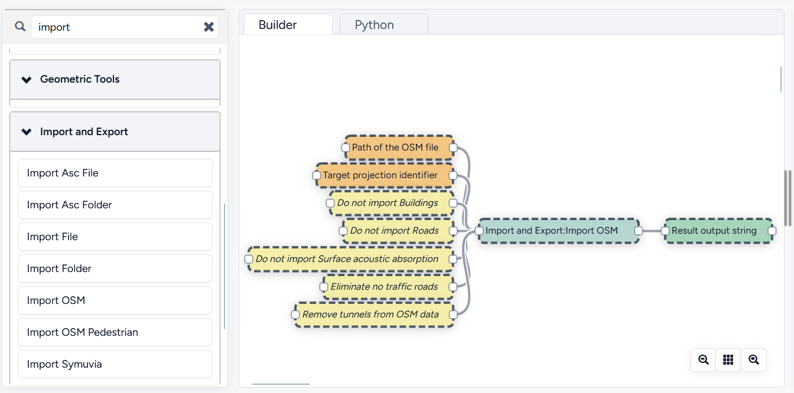
You should end up with a BUILDINGS table containing the city center buildings. If you want to visualize the buildings in NoiseModelling, you can use the Table visualization Map block (in the Database Manager section) with Name of the table set to BUILDINGS and Projection identifier set to 2154.
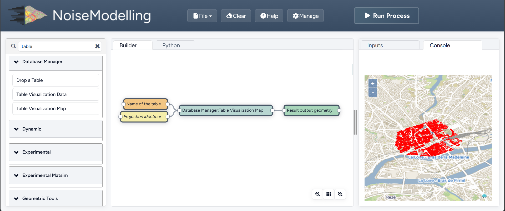
Step 2: Import MATSim Traffic Data
Now we can import the traffic data from the MATSim simulation.
To do that, we use the Traffic_From_Events block.
The mandatory inputs are:
folder: the path of the MATSim folder, here it is where you put the content of thescenario_matsim.zipfile
An important option is The size of time bins in seconds which represents the time period you want to aggregate the traffic data over. Here let’s use 900 to get data every 15 minutes.
One optional, but very important input, is the Network CSV file path option. The idea is that when the MATSim scenario was run, the link geometries were simplified to save computation time.
This simplification of roads geometry is a bad thing for NoiseModelling since we take buildings into account (simplified links can pass through buildings) and since source-receiver distance has a big impact on noise levels.
That’s why the detailed_network.csv file is given with the other data files. It contains the “real” geometry of links before MATSim simplification process (FYI, This is obtained by setting the ‘outputDetailedLinkGeometryFile’ option to a file name in the pt2matsim config file).
An other important parameter is the populationFactor. This corresponds to the downscaling factor that was used to generate the list of agents. Typically, this list of agents is generated based on the available census and survey data for an administrative area.
Here, for our use case, the Matsim scenario and it’s agents were generated by using only 0,1% of the area total population (that is a population factor of 0.001).
You can explore the other options by reading their descriptions. Here we are going to set them as follows:
Network CSV file:
/path/to/your/scenario_matsim/detailed_network.csvExport additional traffic data ?:
truePath of the Matsim output folder:
/path/to/your/scenario_matsimpopulationFactor:
0.001The size of time bins in seconds:
900outTableName: “” (not set, use default)
Skip unused links ?:
trueProjection identifier:
2154
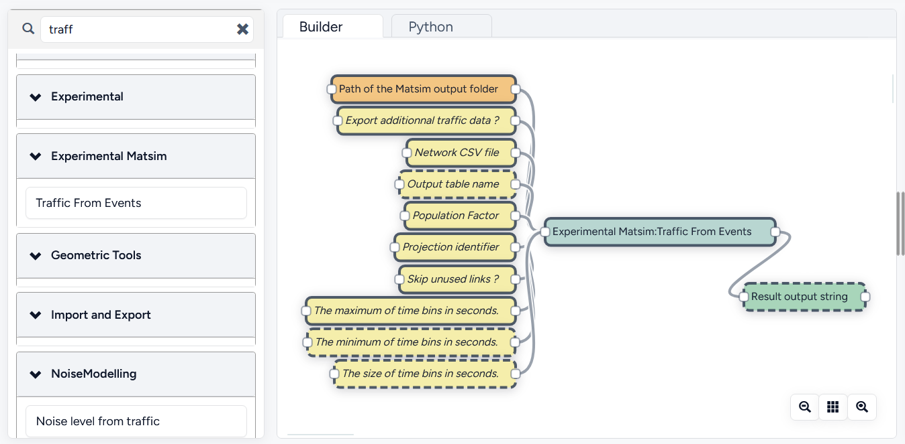
You should end up with a MATSIM_ROADS table containing the links ids and their geometry and a MATSIM_ROADS_LW table containing the noise power level of each link per 15 min time slice.
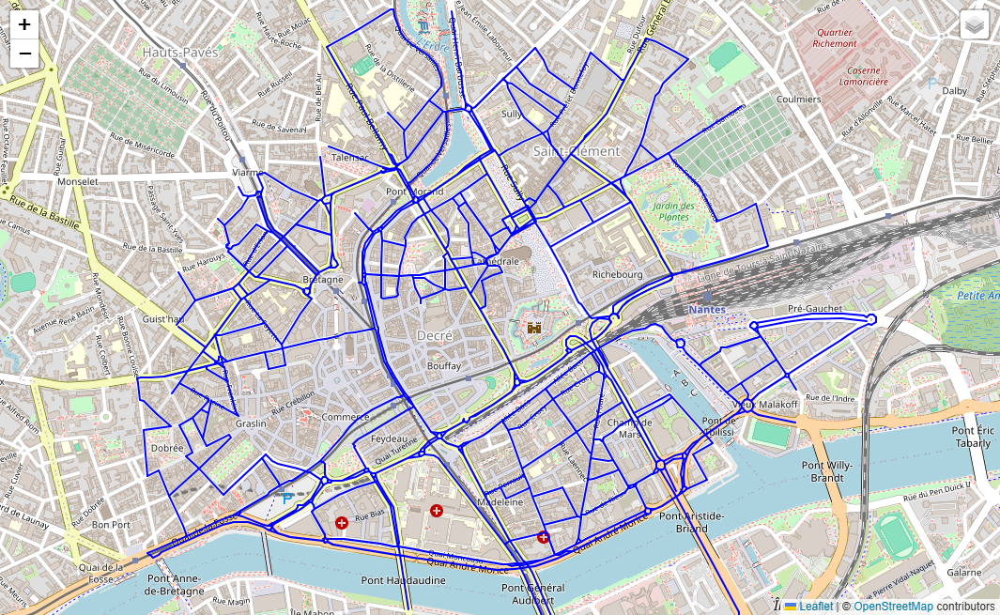
Step 3: Import MATSim Activities
The next step consists in importing the activities locations from the MATSim simulation.In MATSim, activities are also called facilities.
Let’s use the Import_Activities bloc. The inputs descriptions are quite straightforward:
Name of created table:
ACTIVITIESProjection identifier:
2154Path of MatSim facilities file:
/path/to/your/scenario_mastim/output_facilities.xml.gz
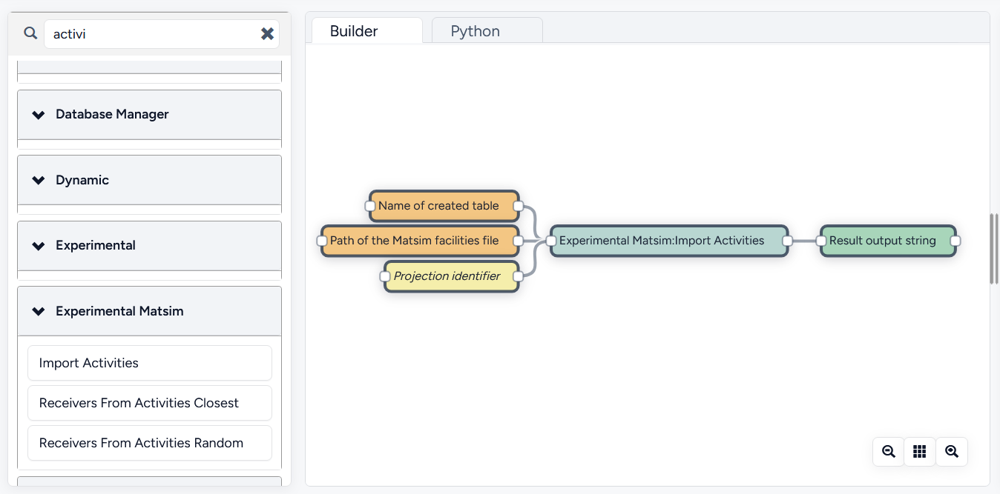
You should end up with a ACTIVITIES table containing the activities location, and few other properties.
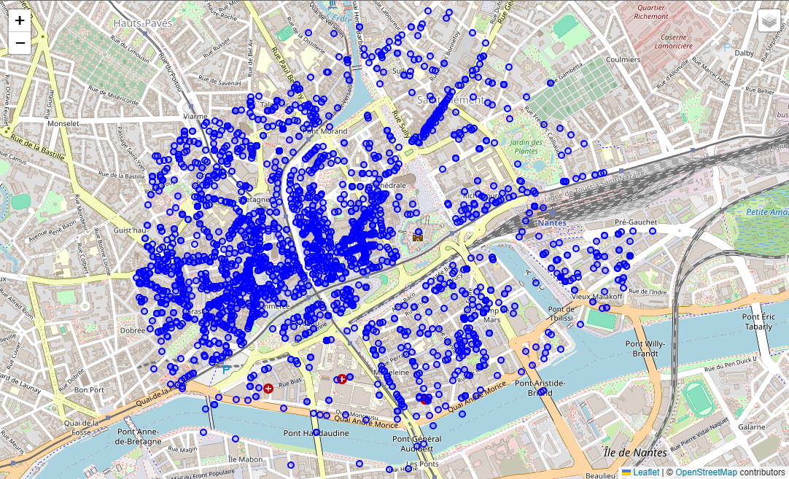
Step 4: Assign a Receiver to each Activity
Now, if you look closely, activities are placed in unorthodox locations, sometimes in the river, sometimes in buildings, etc. This is irrelevant for a MATSim simulation but here we want to calculate noise levels, so we need properly placed receivers.
So we want to assign a properly placed receiver for every activity we imported. We do that in 2 steps:
we calculate all the “valid” receiver positions using the
Building_Gridblocwe choose, for each activity the right receiver.
There are 2 ways to execute step 4.2. We can simply choose the closest receiver for every activity, using the Receivers_From_Activity_Closest bloc.
Or we can randomly choose a receiver on the closest building of each activity using the Receivers_From_Activity_Random bloc.
Here we are going to use the latter way, the random one.
Let’s calculate all the receivers around our buildings using the Building_Grid bloc with the following inputs:
Buildings table table:
BUILDINGSDistance between receivers:
5.0Height:
4.0
That will place receivers around all the buildings, at 4 meter high and 5 meters apart.
Now, we must use the Receivers_From_Activity_Random bloc. The inputs are simple, you just have to specify the names of the previously created tables
Name of created table:
ACTIVITY_RECEIVERSName of the table containing the activities:
ACTIVITIESName of the table containing the buildings:
BUILDINGSName of the table containing the receivers:
RECEIVERS
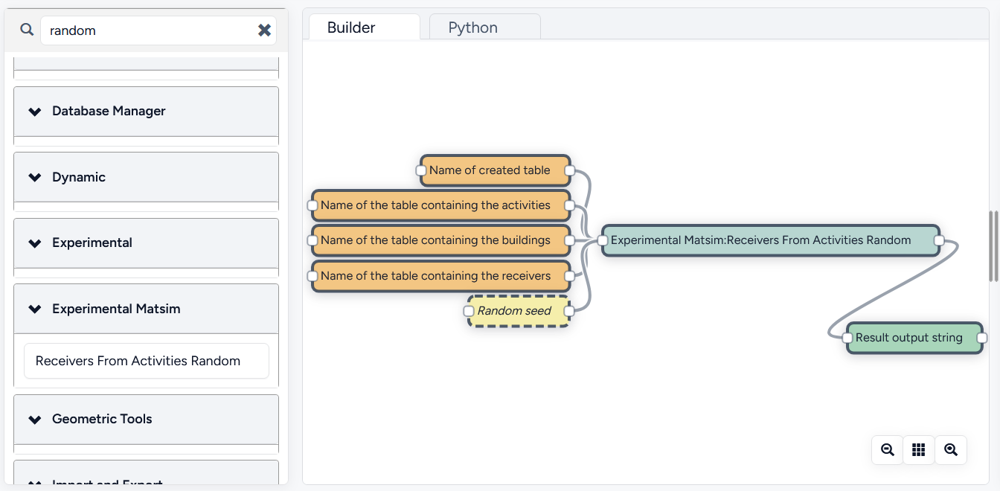
You should end up with a ACTIVITY_RECEIVERS table containing the new location (THE_GEOM, in blue below) as well as the original matsim position (ORIGIN_GEOM, in red below).
You can inspect the results to see where each activity is placed now.
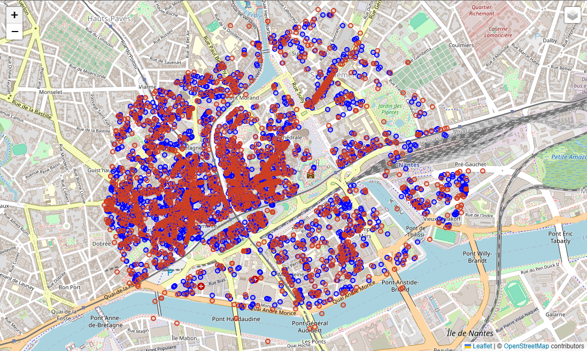
Step 5: Calculate Noise Receiver Levels
In this step, we want to calculate a noise level for every receiver, every 15 minutes (96 maps in total).
We’ll use the Noise_level_from_source bloc. When the using the Sources emission table name, the bloc will automatically take into account the time bins defined in the emission table.
For more details about the different parameters, browse the NoiseModelling general documentation.
Let’s use the previously generated table to launch our propagation calculation.
The parameters we will use are the following:
Buildings table name:
BUILDINGSReceivers table name:
ACTIVITY_RECEIVERSSources geometry table name:
MATSIM_ROADSSources emission table name:
MATSIM_ROADS_LWMaximum source-receiver distance:
250Maximum source reflexion distance:
50Order of reflexion:
1Diffraction on vertical edges:
falseDiffraction on horizontal edges:
true
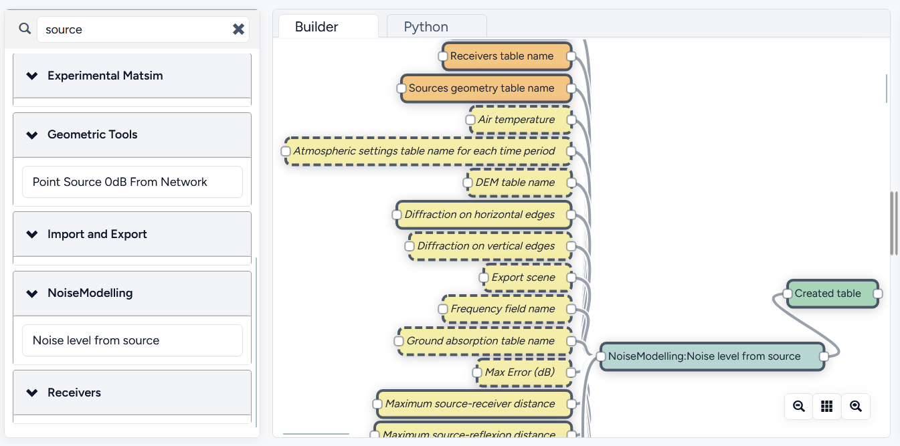
We should end up with a table called RECEIVERS_LEVEL that contains a list of noise levels for every receiver, at every 15-minute interval.
We have our noise maps !
Visualization
Export the data
Here we’ll look at a nice way to look at the results with QGIS.
First we need to export the RECEIVERS_LEVEL table data into a Shapefile.
We’ll simply use the Export_Table WPS bloc with the following parameters:
Name of the table:
RECEIVERS_LEVELPath of the file you want to export:
/path/to/wherever/results.shp
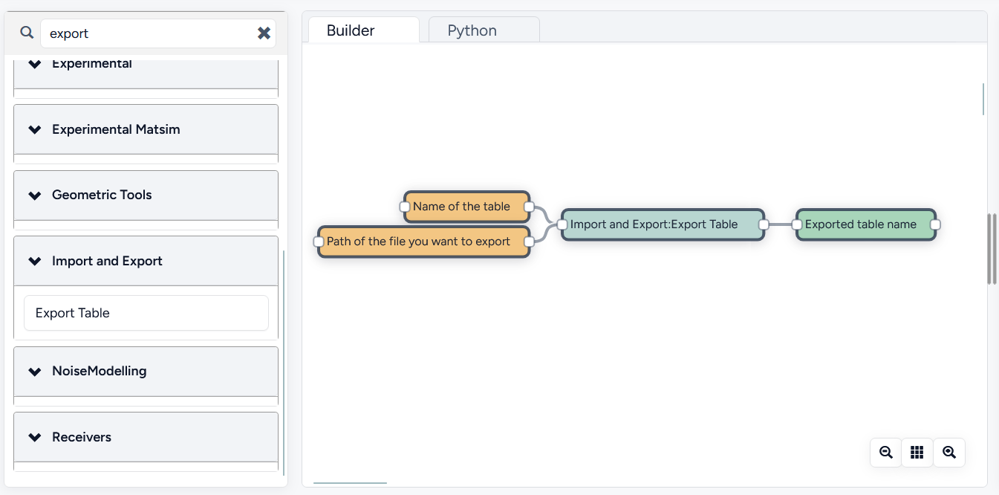
View it in QGIS
Let’s go into QGIS. We are going to import 2 layers: an osm background and our results.
Note
For those who are new to GIS and want to get started with QGIS, we advise you to follow this tutorial as a start.
In
Layer→Add Layer→Add vector layer, you can enter the path of yourresults.shpfile. Then click onAdd.In
Layer→Add Layer→Add XYZ Layer, you can add the OpenStreetMap background.
You should see a lot of points all of the same color.
We now need to choose a time-slice we want to visualize, let’s pick the timeBin of 10h (36000 seconds).
If you right click on the receivers layer and click on Filter... you should see the filter dialog.
To filter results for the 10h00_10h15 time period you can enter the following filter query :
PERIOD = 36000
The last step is to color the dots based on the LEQA field. The following configuration can be used:
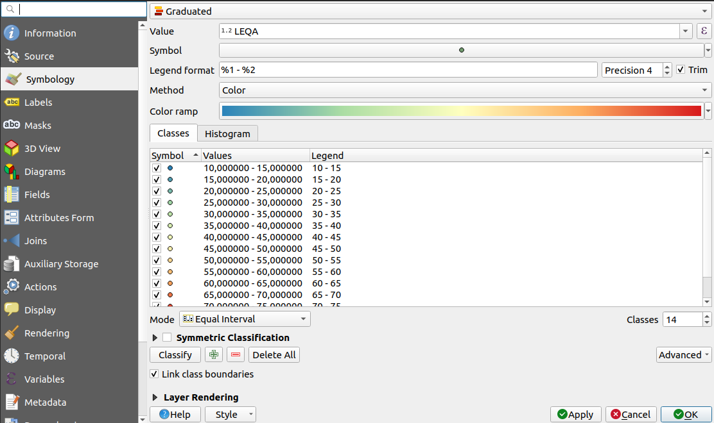
And the final result, between 10h00 and 10h15:
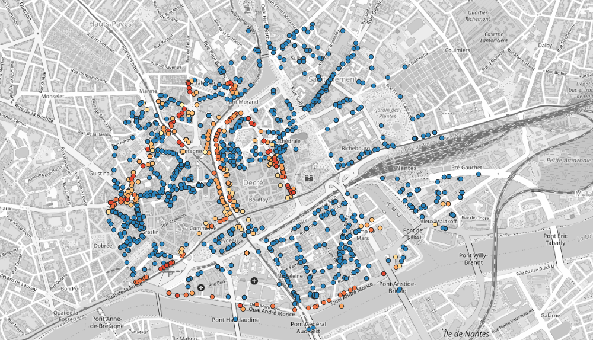
Going Further
Now maybe we just want to compute actual noise maps instead of just the noise levels at some specific points.
In this case we’d want to use a different receiver grid using the Delaunay_Grid bloc.
Then we can use the same Noise_level_from_source blocs to calculate the noise levels at every receiver at every timestep.
You can then run a Create_Isosurface bloc to create a noise map, it will also automatically detect the PERIOD and produce one noise map per time bin.
Here is an example of a noise map for the 10h to 10h15 time period:
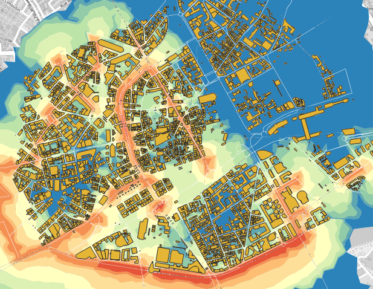